건설기계설비산업기사 (2009-07-26 기출문제)
1과목: 기계제작법
1. 절삭가공에 있어서 구성인선의 발생을 방지하는 방법이 아닌 것은?
- 절삭 깊이를 크게 한다.
- 경사각(rake angle)을 크게 한다.
- 윤활성이 좋은 절삭 유제를 사용한다.
- 절삭속도를 크게 한다.
(정답률: 알수없음)

2. 판금가공에서 강판의 스프링 백(spring back)에 관한 설명 중 틀린 것은?
- 동일 조건에서 탄성 강도가 큰 판재일수록 스프링 백의 양은 커진다.
- 동일 조건에서 구부림 반지름이 같을 때에는 두께가 두꺼울수록 스프링 백의 양은 작아진다.
- 동일 조건에서 구부림 반지름이 클수록 스프링 백의 양은 커진다.
- 동일 조건에서 굽힘 각도가 예리할수록 스프링 백의 양은 작아진다.
(정답률: 알수없음)
3. 전기 용융법에 해당하며 아크열이 아닌 용융 슬래그 속에서 전극 와이어를 연속적으로 공급하여 슬래그 안에서 흐르는 전류의 저항열을 이용하여 용접하는 방법은?
- 일렉트로 슬래그 용접
- 테르밋 용접
- 원자 수소 용접
- 플라즈마 아크 용접
(정답률: 알수없음)
4. 비교측정법과 비교한 직접측정법의 특징을 설명한 것으로 틀린 것은?
- 측정 범위가 넓다.
- 수량이 적고, 종류가 많은 제품의 측정에 유리하다.
- 측정물의 실제 치수를 직접 읽을 수 있다.
- 기준 치수인 표준 게이지가 필요하다.
(정답률: 알수없음)
5. 정밀 입자 가공에서 호닝(honing)의 결과에 대한 설명으로 틀린 것은?
- 표면 거칠기를 좋게 할 수 있다.
- 최소의 발열과 변형으로 신속하고 경제적인 정밀가공을 할 수 있다.
- 전(前)공정에서 나타난 테이퍼, 진원도 또는 진직도의 오차를 수정할 수 있다.
- 호닝에 의하여 구멍의 위치를 변경시킬 수 있다.
(정답률: 알수없음)
6. 용접의 특징을 설명한 것으로 틀린 것은?
- 이음 접합부의 이음 효율이 높다.
- 접합부의 기밀성과 수밀성, 유일성이 양호하다.
- 제품이 무거워지고 가공 공수가 많이 든다.
- 열의 영향으로 잔류응력과 변형이 발생할 수 있다.
(정답률: 알수없음)
7. 각도 측정기에 해당 되는 것은?
- 마이크로미터
- 공기마이크로미터
- 버니어캘리퍼스
- 컴비네이션 세트
(정답률: 알수없음)
8. 연삭에서 글레이징(glazing)의 발생 원인으로 가장 거리가 먼 것은?
- 숫돌의 결합도가 너무 크다.
- 숫돌의 주속도가 너무 빠르다.
- 숫돌 재질이 가공물 재질에 적합하지 않다.
- 연삭숫돌 입도가 너무 작거나 연삭 깊이가 작다.
(정답률: 알수없음)
9. 금속재료의 소성을 이용하여 가공하는 방법인 소성가공법의 종류에 해당되지 않는 것은?
- 단조
- 압연
- 압출
- 절삭
(정답률: 알수없음)
10. 아베의 원리(Abbe's primciple)에 대하여 가장 적합한 설명은?
- 측정기의 측정면 모양은 피측정물의 외형이 곡면에는 평면, 안지름에는 구면이나 곡면을 사용한다.
- 피측정물과 표준자와는 측정방향에 있어서 일직선 위에 배치하여야 한다.
- 측정시 눈의 위치를 언제나 눈금판에 대하여 수직이 되도록 한다.
- 측정자의 마모를 적게 하기 위하여 내마모성이 큰 재료를 선택한다.
(정답률: 알수없음)
11. 상목과 하목을 서로 경사지게 교차시킨 것으로 일반금속의 다듬질에 사용되는 줄은?
- 단목줄
- 복목줄
- 귀목줄
- 파목줄
(정답률: 알수없음)
12. 강을 A3~Acm 변태점보다 약 40~60℃ 정도의 높은 온도로 가열하여 균일한 오스테아니트 조직으로 한 후에 공기 중에서 냉각하는 작업은?
- 담금질(quenching)
- 뜨임(tempering)
- 서브제로처리(sub-zero treatment)
- 불림(normalizing)
(정답률: 알수없음)
13. 일반적인 비파괴 시험법의 종류가 아닌 것은?
- 초음파 탐상 시험
- 피로 시험
- 액체침투 탐상 시험
- 방사선투과 시험
(정답률: 알수없음)
14. 치공구의 3요소로 거리가 먼 것은?
- 위치결정면
- 위치결정구
- 공구안내
- 클램프
(정답률: 알수없음)
15. 목형용 목재의 구비조건으로 옳지 않은 것은?
- 변형이 적어야 한다.
- 재질이 균일하여야 한다.
- 수분과 수지의 함유량이 많아야 한다.
- 가공이 용이해야 한다.
(정답률: 알수없음)
16. 방전가공에 대한 설명으로 맞지 않는 것은?
- 전극재료는 일반적으로 아연, 크롬 등을 이용한다.
- 통전성을 지닌 금속에 대해 가공을 용이하게 할 수 있다.
- 전극의 형상대로 복잡한 모양을 정밀하게 가공할 수 있다.
- 전극 재료의 가공이 용이하다.
(정답률: 알수없음)
17. 리드 스크류의 피치가 4mm인 미국식 선반에서 나사의 피치가 1mm인 나사를 가공하려고 할 때, 변환기어(주축에 연결된 기어, 어미나사에 연결된 기어)의 이 수는?
- 20, 80
- 125, 100
- 10, 50
- 30, 90
(정답률: 알수없음)
18. 침탄체인 KCN 또는 NaCN 등에 촉진제인 염화물이나 탄산염 등을 첨가하여 강제(鋼製)상자에 넣어 가열한 후 용해시킨 염욕 중에 제품을 일정시간 두면, 탄소와 질소가 동시에 강재의 표면에 침입 확산시키는 표면 경화법으로 첨화법이라고도 하는 것은?
- 고주파 경화법
- 크로마이징
- 시안화법
- 불꽃 경화법
(정답률: 알수없음)
19. 내경 측정에 사용되는 측정기가 아닌 것은?
- 내측 마이크로미터
- 실린더 게이지
- 버니어 캘리퍼스
- 옵티컬 플랫
(정답률: 알수없음)
20. 선삭에서 칩 브레이커가 가장 필요한 경우는 어떤 형태의 칩이 발생될 때인가?
- 유동형 칩
- 전단형 칩
- 경작형 칩
- 균일형 칩
(정답률: 알수없음)
2과목: 재료역학
21. 길이 100cm, 지름 2cm인 환봉이 인장하중을 받아 길이가 100.4cm, 지름이 1.9984cm로 변하였다. 이 재료의 포와송 비는?
- 0.2
- 0.32
- 0.5
- 5
(정답률: 알수없음)
22. 그림과 같은 I형 단면의 도심
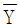
는 약 몇 cm 인가?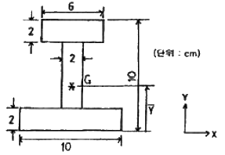
- 3.25
- 4.27
- 5.67
- 6.80
(정답률: 알수없음)
23. 그림과 같이 줄이 천장에 매달려 10kN의 무게를 지탱하고 있다. AB 부분에서 줄 내부에 생기는 응력은 약 몇 MPa 인가? (단, 줄의 지름은 2cm 이다.)
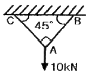
- 22.5
- 32
- 45
- 64
(정답률: 알수없음)
24. 단면적 2cm2, 길이 20cm인 연강이 인장하중에 의하여 0.1mm만큼 신장되었다. 이 봉에 발생하는 인장응력은 몇 MPa 인가? (단, 탄성계수 E는 210GPa 이다.)
- 52.5
- 1⑤
- 157.5
- 210
(정답률: 알수없음)
25. 지름과 길이가 각각 d1, d2 및 L1, L2인 2개의 운형 단면의 기둥이 있다. 재료, 지지조건 및 좌굴하중이 모두 같을 때 d1은 d2의 몇 배인가? (단, L2 = L1/2 이고, 오일러의 공식을 적용한다.)
- 2
- 1/2
- √2
- 1/√2
(정답률: 알수없음)
26. 균일 단명봉에 그림과 같이 하중이 작용할 때 ℓ2부분에 발생하는 내력의 크기와 방향은?
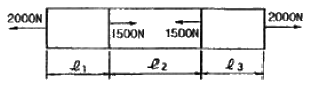
- 1500N, 인장
- 1500N, 압축
- 500N, 인장
- 500N, 압축
(정답률: 알수없음)
27. 두께 3mm인 얇은 강판으로 만들어진 지름 6m의 구형(球形) 내압 용기가 안전하게 받을 수 있는 내부압력은 약 몇 kPa 인가? (단, 허용 인장응력은 90 MPa 이다.)
- 420
- 360
- 500
- 180
(정답률: 알수없음)
28. 그림과 같이 양 지점에서 같은 거리에 같은 크기의 집중하중을 받는 보의 굽힘모멘트 선도의 모양은?
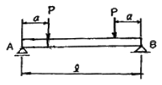
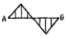
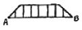
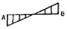
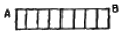
(정답률: 알수없음)
29. 지름이 8mm인 강선을 굽혀 최대응력이 100MPa 이 되도록 하려면 굽힘이 곡률 반지름은 몇 m로 하여야 하는가? (단, 탄성계수 E = 210 GPa 이다.)
- 6.8
- 7.8
- 8.4
- 9.4
(정답률: 알수없음)
30. 지름 4cm인 환봉에 125.6 kN의 인장력이 작용하였을 경우 봉 내에 생기는 최대 전단응력의 크기는 약 몇 MPa 인가?
- 50
- 100
- 150
- 200
(정답률: 알수없음)
31. 그림과 같은 평면 응력상태에서 σx = 50MPa, σy = 0 의 인장응력과 τxy = 30 MPa의 전단응력이 작용하고 있을 때 재료 내에 생기는 최대 주응력은 약 몇 MPa 인가?
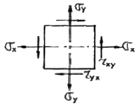
- 25.7
- 39.1
- 64.1
- 74.8
(정답률: 알수없음)
32. 다음 응력집중에 대한 설명 중 틀린 것은?
- 단면의 형상이 급격히 변화하는 위치에서는 큰 응력이 발생한다.
- 단면에 발생하는 평균응력에 대한 최대 집중응력의 비를 응력집중 계수라 한다.
- 단(fillet) 달린 축에서는 단 부분의 응력집중은 곡률반경이 작으면 크게 된다.
- 같은 재료의 응력 집중 계수는 단면의 형상변화와 관계없이 항상 일정한 값을 갖는다.
(정답률: 알수없음)
33. 길이 5m의 외팔보가 w[N/m]의 등분포 하중을 받는다. 이 때 최대 굽힘응력이 100MPA 이라 할 때 최대 전단응력은 몇 MPa 인가? (단, 보 단면의 폭×높이(b×h)는 10cm×20cm 이다.)
- 1
- 2
- 3
- 4
(정답률: 알수없음)
34. 매분 400회전하면서 200kW의 동력을 전달할 수 있는 길이 1m인 원형 축의 최소 지름은 몇 mm 인가? (단, 허용 전단응력은 25MPa 이다.)
- 78
- 86
- 100
- 107
(정답률: 알수없음)
35. 그림과 같은 외팔보에 2개의 집중하중 20kN 이 작용하고 있을 때 고정단에서의 최대 굽힘모멘트 Mmax는 몇 kN·m 인가?
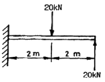
- 40
- 60
- 80
- 100
(정답률: 알수없음)
36. 길이가 2m인 단순보의 중앙에 집중하중을 작용시켜 최대처짐이 0.2cm로 제한하려면 최대 하중은 약 몇 N 인가? (단, 보의 단면은 지름 10cm의 원혀잉고, 탄성계수는 E는 200GPa 이다.)
- 9460
- 11780
- 14870
- 18830
(정답률: 알수없음)
37. 단면적이 100cm2인 레일이 있다. 이 레일의 온도를 180℃ 상승시키는 동안에 길이가 늘어나지 못하도록 하는데 500kN의 힘이 필요하였다. 이 레일의 선팽창계수(1/℃)는? (단, 탄성계수 E = 210 GPa 이다.)
- 1.32×10-5
- 1.51×10-5
- 1.74×10-5
- 1.90×10-5
(정답률: 알수없음)
38. 원형 축이 비틀림 모멘트를 받고 있을 때, 전단 응력에 대한 설명으로 올바른 것은?
- 지름에 반비례한다.
- 지름의 2승에 반비례한다.
- 지름의 3승에 반비례한다.
- 지름의 4승에 반비례한다.
(정답률: 알수없음)
39. 개울 양쪽의 언덕에 나무 판자를 걸쳐서 개울을 건너는 외나무 다리를 설계하려고 한다. 재료역학적인 해석을 위하여 자유 물체도를 그릴 경우 경계조건을 어떻게 잡는 것이 적당한가?
- 외팔보
- 단순지지보
- 일단고정, 일단지지 부정정보
- 양단고정 부정정보
(정답률: 알수없음)
40. 평균 지름 25cm, 소선의 지름 1.25cm인 원통형 코일스프링에 180N의 축 하중을 작용시켰더니 축 방향으로 10cm가 늘어났다. 이때 이 코일스프링에 저장된 탄성에너지의 크기는 몇 N·m 인가?
- 9
- 12
- 18
- 25
(정답률: 알수없음)
3과목: 기계설계 및 기계재료
41. 알루미늄(Al)에 약 10%까지 마그네슘(Mg)을 첨가한 합금으로 내식성, 강도, 연신율이 우수하며 비중이 작은 합금은?
- 실루민
- 하이드로날륨
- 톰백
- 스텔라이트
(정답률: 알수없음)
42. 주철 제조시 규소철(Fe-Si) 또는 칼슘-실리게이트(Ca-Si)로 접종(inoculation)하여 응고와 동시에 흑연화가 이루어져 강도를 높은 주철은?
- Chilled 주철
- Meehanite 주철
- Pearlite 주철
- Acicular 주철
(정답률: 알수없음)
43. 아연에 대한 설명 중 틀린 것은?
- 조밀 육방 격자형이며 회백색의 연한 금속이다.
- 비중이 7.1, 용융점이 420℃ 이다.
- 산, 알칼리, 해수 등에 부식되지 않는다.
- 철판, 철선의 도금에 사용된다.
(정답률: 알수없음)
44. 구리합금 중 6:4 황동에 약 0.8% 정도의 주석을 첨가하여 선박 기계용 등에 사용하는 특수황동은?
- 네이벌 황동
- 강력 황동
- 납 황동
- 애드미럴티 황동
(정답률: 알수없음)
45. 탄소강 중 함유원소의 영향에 대한 설명이 틀린 것은?
- 황(S)은 적열취성이 원인이 된다.
- 구리(Cu)는 인장강도 및 경도를 감소시키고 부식저항을 크게 한다.
- 인(P)은 상온취성의 원인이 된다.
- 규소(Si)는 인장강도 및 경도를 상승시킨다.
(정답률: 알수없음)
46. 강괴(ingot)의 제조시 탈산제로 사용되지 않는 것은?
- Fe-W
- Fe-Si
- Fe-Mn
- Al
(정답률: 알수없음)
47. 금속의 공통된 성질에 대한 설명으로 틀린 것은?
- 수은(Hg)을 제외한 모든 금속은 상온에서 고체이며 결정체이다.
- 전기 및 열의 양도체이다.
- 전성 및 연성이 좋다.
- 비중이 작고 금속 특유의 광택을 갖지 않는다.
(정답률: 알수없음)
48. 탄소강에서 탄소함유량이 증가할 경우 탄소강의 기계적 성질은 어떻게 변화하는가?
- 경도 및 연성 감소
- 경도 및 연성 증가
- 강도 및 경도 감소
- 강도 및 경도 증가
(정답률: 알수없음)
49. 금속의 변태에서 온도의 변화에 따라 원자배열의 변화, 즉 결정 격자가 바뀌는 것은?
- 자기변태
- 동소변태
- 고용변태
- 입계변태
(정답률: 알수없음)
50. 백주철을 고온에서 장시간 열처리하여 시멘타이트 조직을 분해하거나 소실시켜 인성 또는 연성을 개선한 주철은?
- 가단 주철
- 칠드 주철
- 구상흑연 주철
- 합금 주철
(정답률: 알수없음)
51. 그림과 같은 기어열에서 각각의 잇수가 ZA = 16, ZB = 60, ZC = 12, ZD = 64인 경우 A 기어가 있는 I축이 1500rpm 일 때, D기어가 있는 Ⅲ축의 회전수는 얼마인가?
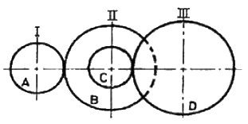
- 56 rpm
- 60 rpm
- 75 rpm
- 85 rpm
(정답률: 알수없음)
52. 웜기어에서 웜이 3줄, 웜 휠(worm wheel)의 잇수가 90개이면 감속비는?
- 1/30
- 1/60
- 1/90
- 1/10
(정답률: 알수없음)
53. 항복응력을 σY, 허용응력을 σa라 할 때, 안전율(safety factor) St에 대한 맞는 식은?
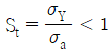
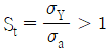
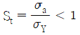
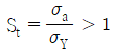
(정답률: 알수없음)
54. 다음 중 인장응력을 구하는 식으로 맞는 것은? (단, σ는 인장응력, A는 단면적, P는 인장하중이다.)
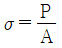
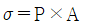
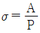
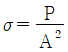
(정답률: 알수없음)
55. 볼트를 결합시킬 때 너트를 2회선 시켰더니 12mm가 앞으로 나아갔고 나사의 산수는 6산이 감기었다면 이때 나사의 조건으로 맞는 것은?
- 리드 6mm, 세줄 나사, 피치 2mm
- 리드 6mm, 한줄 나사, 피치 1mm
- 리드 12mm, 세줄 나사, 피치 2mm
- 리드 12mm, 한줄 나사, 피치 1mm
(정답률: 알수없음)
56. 300 N·m의 비틀림 모멘트가 작용하는 지름이 3cm인 축의 최대 비틀림 응력은 약 몇 MPa 인가?
- 56.6
- 113.2
- 177.8
- 355.6
(정답률: 알수없음)
57. 엔드저널로서 지름 50mm의 저널면에 작용하는 베어링 압력을 6 N/mm2 저널의 길이를 100mm라 할 때 베어링이 받는 전체 하중은 몇 kN 인가?
- 10
- 20
- 30
- 40
(정답률: 알수없음)
58. 1톤(ton)의 인장하중을 받는 볼트의 지름을 선정하고자 한다. 가장 적당한 볼트의 크기는? (단, 안전율은 4, 최대 인장응력은 48 kgf/mm2 이다.)
- M18
- M20
- M12
- M14
(정답률: 알수없음)
59. 역류를 방지하여 유체를 한쪽 방향으로만 흘러가게 하는 밸브를 무슨 밸브라 하는가?
- 콕밸브
- 체크밸브
- 게이트밸브
- 안전밸브
(정답률: 알수없음)
60. 볼 베어링의 기본부하량을 C, 베어링 이론하중 Pth, 회전수가 N일 때 베어링의 수명시간 Lh는? (단, 하중계수는 fw, 속도계수(speed factor)는 fn, 수명계수(life factor)는 fh 이다.)
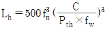
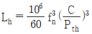
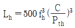
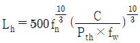
(정답률: 알수없음)
4과목: 유압기기 및 건설기계일반
61. 기계의 운동, 작업하는 일에 유압을 사용함으로써 큰 힘을 얻을 수 있고 속도를 자유로 바꿀 수 있는 장점이 있다. 다음 중 유압 장치를 이용하여 작업하는 내용으로 가장 거리가 먼 것은?
- 화물 쌓기나 짐 내리기 등의 작업에 사용한다.
- 교류전동기의 회전수를 자유로이 바꿀 수 있다.
- 선반 등 공작기계의 조작에 사용한다.
- 자동차의 브레이크나 핸들 조작을 좋게 할 수 있다.
(정답률: 알수없음)
62. 피스톤 모터에 관한 설명 중 틀린 것은?
- 플런저 모터라고도 한다.
- 종류로는 액시얼(axial)형과 레이디얼(fadial)형이 있다.
- 정용량형만 있고, 가변용량형은 없다.
- 피스톤 펌프와 유사한 구조를 가지고 있다.
(정답률: 알수없음)
63. 회로의 일부에 배압을 발생시키고자 할 때 사용하는 밸브는?
- 카운터 밸런스 밸브
- 감압 밸브
- 시퀀스 밸브
- 언로드 밸브
(정답률: 알수없음)
64. 유압 기호의 표시방법과 해석의 기본사항에 대한 설명 중 옳지 않은 것은?
- 기호는 원칙적으로 통상의 운휴 상태 또는 기능적인 중립 상태를 나타낸다.
- 복잡한 기호의 경우, 기능상 사용되는 접속구는 보통 생략한다.
- 기호는 해당기기의 외부 포트의 존재를 표시하나 그 실제 위치를 나타낼 필요는 없다.
- 포트는 관로와 기호요소의 접점으로 나타낸다.
(정답률: 알수없음)
65. 원통형 미끄럼면에 내접하여 있으면서 축방향으로 이동하여 유로의 개폐를 하는 실패 모양의 공유압 부품은?
- 패킹(packing)
- 개스킷(gasket)
- 램(ram)
- 스풀(spool)
(정답률: 알수없음)
66. 유량제어밸브를 실린더 출구측에 설치한 회로로서, 실린더에서 유출되는 유량을 제어하여 피스톤의 속도를 제어하는 회로는?
- 미터 아웃 회로
- 미터 인 회로
- 카운터 밸런스 회로
- 브레이크 회로
(정답률: 알수없음)
67. 다음 중 압력의 단위가 아닌 것은?
- Pa
- bar
- N/m2
- kgf/cm3
(정답률: 알수없음)
68. 유압 기호 중에서 가열기에 해당하는 것은?
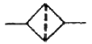
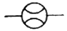
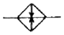
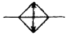
(정답률: 알수없음)
69. 다음의 유압 모터 회로는 건설기계에서 사용되고 있는 회로도이다. 이 회로에 해당하는 것은?
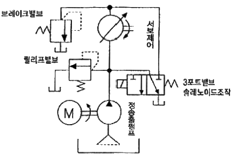
- 탠덤형 배치 회로
- 직렬 배치 회로
- 병렬 배치 회로
- 정출력 구동 회로
(정답률: 알수없음)
70. 그림과 같이 밀폐된 시스템이 평형 상태를 유지할 경우 힘 F1을 수식으로 표현하면? (단, A1, A2는 압력이 작용하는 면적이고, F1과 F2는 각각 사람과 자동차에 의해 가해지는 힘이다.)
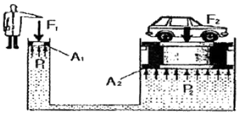
- (A1 ⦁ A2)/F2
- (A1 ⦁ F2)/A2
- F2/(A1 ⦁ A2)
- A2/(A1 ⦁ F2)
(정답률: 알수없음)
71. 로더를 적하방식에 따라 분류할 때 앞부분에서 굴삭하여 장비 위를 넘어 후면에 덤프할 수 있는 것으로 좁은 장소에서 차량의 선회가 곤란한 터널 공사 등에서 효과적인 방식은?
- 프런트 엔드식
- 사이드 엔드식
- 오버 헤드식
- 사이드 덤프식
(정답률: 알수없음)
72. 크레인의 기중 작업에서 물체의 무게가 무거울수록 붐의 길이와 각도는 어떻게 하여야 하는가?
- 길이는 짧게, 각도는 내린다.
- 길이는 짧게, 각도는 올린다.
- 길이는 길게, 각도는 내린다.
- 길이는 길게, 각도는 올린다.
(정답률: 알수없음)
73. 일반적으로 건설공사용 공기 압축기 규격 표시방법은?
- 토출압력이 7 kgf/cm2 인 공기의 매분당 토출능력(m3/min)
- 흡입압력이 7 kgf/cm2 인 공기의 모터출력(kW)
- 토출압력이 10 kgf/cm2 인 공기의 토출압력(kgf/cm2)
- 흡입압력이 10 kgf/cm2 인 공기의 피스톤 가압량(m3)
(정답률: 알수없음)
74. 불도저의 규격을 나타내는 것은?
- 등판능력
- 기관출력
- 전장비길이
- 작업가능상태의 중량
(정답률: 알수없음)
75. 롤러에서 선압의 정의로 올바른 것은?
- 바퀴의 접지중량을 바쿠의 폭으로 나눈 값
- 바퀴의 폭을 접지중량으로 나눈 값
- 접지중량을 롤러 1개의 무게로 나눈 값
- 바퀴의 접지중량을 롤러 전중량으로 나눈 값
(정답률: 알수없음)
76. 아스팔트 혼합재를 일정한 규격과 두께로 깔아주고 다짐하는 용도의 장비는?
- 아스팔트 스프레이
- 아스팔트 믹싱플렌트
- 아스팔트 디스트리뷰터
- 아스팔트 피니셔
(정답률: 알수없음)
77. 디퍼 준설선의 특징으로 맞지 않는 것은?
- 굴삭력이 강하다.
- 경토질에 적합하다.
- 회전반경이 작다.
- 준설능력이 크다.
(정답률: 알수없음)
78. 굴삭기 제원에서 상부 회전체 중심선에서 버킷 선단까지의 거리를 무엇이라 하는가?
- 암 길이
- 붐 길이
- 작업 반경
- 최대 굴삭 깊이
(정답률: 알수없음)
79. 기중기에서 붐 전단에 연결하여 붐의 길이를 늘려주며 일반 붐으로서 작업하기 어려운 곳에 쓰이는 것을 무엇이라 하는가?
- 마스터 붐
- 보조 붐
- 솔레노이드
- 지브 붐
(정답률: 알수없음)
80. 크롤러형 도저의 작업 시 유의사항에 관한 설명으로 맞지 않는 것은?
- 100m 이하의 운반 작업에는 투입하지 않는 것이 바람직하다.
- 자주 이동거리는 2km 이내로 한다.
- 바닥을 평평하게 깎기 위하여 블레이드의 승강은 1회 2cm 정도로 한다.
- 불필요한 전진 및 후진은 하지 않도록 한다.
(정답률: 알수없음)